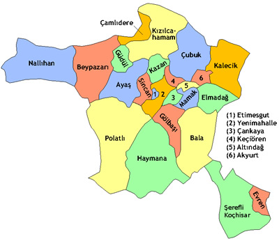
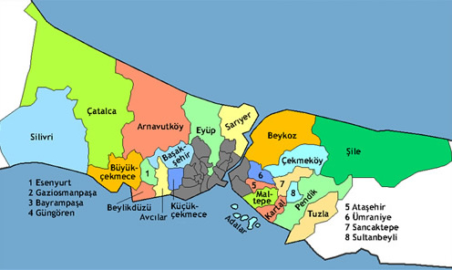

Ankara, Türkiye'nin başkenti Ankara'nın da bağlı olduğu ildir. Coğrafi olarak Türkiye'nin merkezine yakın bir konumda bulunur ve Batı Karadeniz Bölgesi'nde kalan kuzey kesimleri hariç, büyük bölümü İç Anadolu Bölgesi'nde yer alır. Yüzölçümü olarak ülkenin üçüncü büyük ilidir. Bolu, Çankırı, Kırıkkale, Kırşehir, Aksaray, Konya, Eskişehir illeri ile çevrilidir. Ankara'nın başkent ilan edilmesinin ardından şehir hızla gelişmiş ve buna paralel olarak il de günümüzde Türkiye'nin ikinci en kalabalık ili olmuştur. Türkiye Cumhuriyeti'nin ilk yıllarında ekonomisi tarım ve hayvancılığa dayanan ilin topraklarının yarısı hâlâ tarım amaçlı kullanılmasına rağmen, nüfusunun sadece %3'ü köylerde, %70'i ise il merkezinde yaşar.
Ekonomik etkinlik büyük oranda ticaret ve sanayiye dayalıdır, tarım ve hayvancılığın ağırlığı ise giderek azalmaktadır. Ankara ve civarındaki gerek kamu sektörü gerek özel sektör yatırımları, başka illerden büyük bir nüfus göçünü teşvik etmiştir. Cumhuriyetin kuruluşundan günümüze, nüfusu ülke nüfusunun iki katı hızda artmıştır. Nüfusun yaklaşık dörtte üçü hizmet sektörü olarak tanımlanabilecek memuriyet, ulaşım-haberleşme ve ticaret benzeri işlerde, dörtte biri sanayide, %2'si ise tarım alanında çalışır. Sanayi, özellikle tekstil, gıda ve inşaat sektörlerinde yoğunlaşmıştır. Günümüzde ise en çok savunma, metal ve motor sektörlerinde yatırım yapılmaktadır. Türkiye'nin en çok sayıda üniversiteye sahip ili olan Ankara'da ayrıca, üniversite diplomalı kişi oranı ülke ortalamasının iki katıdır. Bu eğitimli nüfus, teknoloji ağırlıklı yatırımların gereksinim duyduğu iş gücünü oluşturur. İlin ulaşım altyapısı başkent eksenlidir; buradan otoyollar, demiryolu ve hava yoluyla Türkiye'nin diğer şehirlerine ulaşılır.
İstanbul ili, Türkiye'nin kuzeybatısında, Marmara Bölgesi sınırları içinde yer alan, ülkenin en kalabalık ilidir. Toprakları Asya ve Avrupa anakaralarına yayılan kıtalararası bir il olan İstanbul'un Çatalca Yarımadası üzerinde bulunan toprakları Avrupa yakası, Kocaeli Yarımadası üzerinde bulunan topraklarıysa Anadolu yakası olarak adlandırılır. İlin iki yakasını birbirinden İstanbul Boğazı ayırır. İstanbul ili kuzeyde Karadeniz, güneyde Marmara Denizi, batıda Tekirdağ, doğuda da Kocaeli ile komşudur. İl toprakları 39 ilçe belediyesine bölünmüş olup; bu belediyelerin tümü İstanbul Büyükşehir Belediyesi çatısı altında toplanmıştır. 10 Temmuz 2004 tarihinde çıkarılan bir yasayla İstanbul Büyükşehir Belediyesi sınırları il mülkî sınırlarıyla eş hâle getirilmiştir.
Son yıllarda birbiri ardına ortaya çıkartılan arkeolojik bulgularla il topraklarında insanlık tarihine ilişkin önemli bilgiler elde edilmiştir. İl sınırları içindeki Yarımburgaz Mağarası'ndan çıkarılan taş aletlerle, ilkel insan izlerinin 400.000 yıl öncesine dayandığı ortaya çıkmıştır. Anadolu Yakası'nda yürütülen kazı çalışmaları ve bunlara bağlı araştırmalar, ilde tarım ve hayvancılığa dayalı ilk yerleşik insan topluluğunun İ.Ö. 5500'lere tarihlenen Fikirtepe Kültürü olduğunu göstermiştir.[9] Bu arkeolojik bulgular yalnızca İstanbul'un değil, tüm Marmara Bölgesi'nin en eski insan izleridir. İstanbul ili sınırları içinde kent bazında ilk yerleşimler ise Anadolu Yakası'nda Kalkedon; Avrupa Yakası'nda Byzantion'dur. İlin bugünkü topraklarında tarih boyunca pek çok farklı güç egemenlik sürmüştür. Yunan şehir devletleriyle başlayan bu süreç Roma, Bizans, Latin ve Osmanlı imparatorluklarıyla sürmüş; il toprakları son olarak Türkiye Cumhuriyeti yönetimine girmiştir. Cumhuriyet dönemi öncesinde egemenliği altında olduğu devletlere binlerce yıl başlentlik yapan İstanbul, 13 Ekim 1923 tarihinde başkentin Ankara'ya taşınmasıyla bu özelliğini yitirmiş; ancak ülkenin ticaret, sanayi, ulaşım, turizm, eğitim, kültür ve sanat merkezi olma özelliğini sürdüregelmiştir.